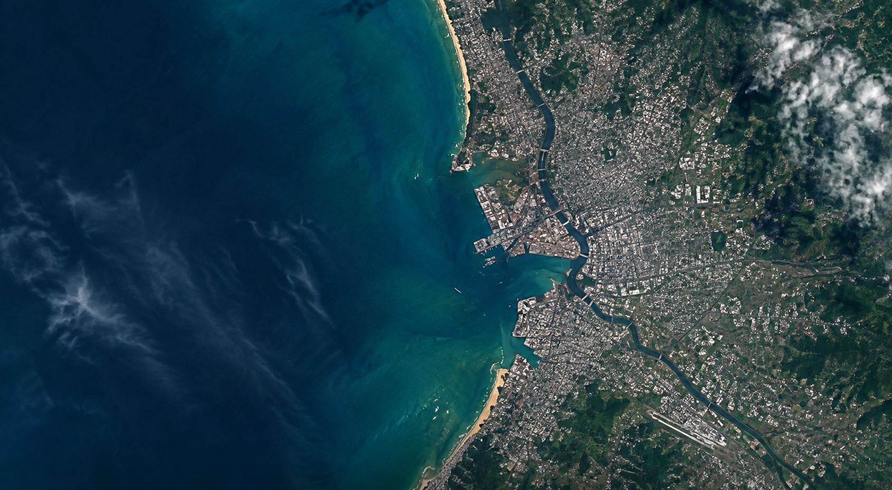

AI-POWERED SATELLITE DISASTER ANALYSIS
SEE THE CHANGE.
UNDERSTAND THE
IMPACT.
Parallax uses satellite imagery and artificial intelligence to detect, visualize and understand environmental and disaster-related changes.
FLOOD
SAR-based analysis
WILDFIRE
Fire & burn detection
VEGETATION
Vegetation change analysis
DISASTER INTELLIGENCE
EXPLORE SATELLITE CHANGES
Select a disaster type, location and dates to analyze satellite imagery.
📍 Click anywhere on the map
to select a location
DISASTER LAYERS
Flood
Vegetation
Wildfire
ANALYZE LOCATION
No location selected
Select a disaster type,
location and two dates.
DISASTER ANALYSIS RESULTS
CHANGE INTELLIGENCE
AFFECTED AREA
65.64 km²
DETECTED CHANGE
12.48 km²
CHANGE %
19.02%
CONFIDENCE
94.7%
BEFORE
No Change
Change Detected
CHANGE DISTRIBUTION
12.48
km²
High Change
49.8%
Moderate
33.1%
Low Change
17.1%
POTENTIAL IMPACT
HIGH
Significant changes detected across the selected area. Further inspection is recommended.
DETECTED CHANGE TYPES
🌊
Flood
38.2%
🔥
Wildfire
18.1%
🌱
Vegetation
19.2%
◈
SATELLITE POWERED
Multi-source Earth observation data.
◷
RAPID ANALYSIS
Detect changes efficiently.
◎
ASIA COVERAGE
Explore disaster events across Asia.
⌘
AI-READY
Designed for intelligent disaster analysis.
HOW PARALLAX WORKS
FROM IMAGERY TO INTELLIGENCE.
Parallax combines satellite imagery, computer vision and disaster-specific analysis to identify significant changes across affected regions.
01
SELECT
Choose a disaster type,
location and dates.
02
RETRIEVE
Satellite imagery is collected
for the selected region.
03
DETECT
AI models identify disaster-related
changes.
04
UNDERSTAND
View affected areas,
statistics and impact insights.